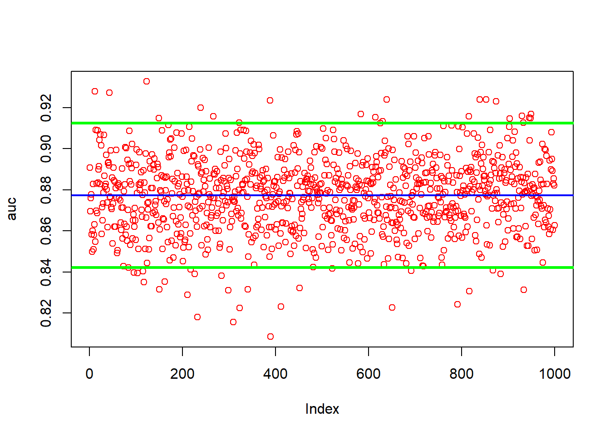

This wil be my titanic Adaboost page
Download the Data
library(readr)
train_titanic <- read_csv("train.csv")## Rows: 891 Columns: 12
## ── Column specification ─────────────────────────────────────────────────────────────────────────
## Delimiter: ","
## chr (5): Name, Sex, Ticket, Cabin, Embarked
## dbl (7): PassengerId, Survived, Pclass, Age, SibSp, Parch, Fare
##
## ℹ Use `spec()` to retrieve the full column specification for this data.
## ℹ Specify the column types or set `show_col_types = FALSE` to quiet this message.the columns i will use are y(Survived), Pclass, Sex, Age, SibSp, Parch, Fare, Emarked as they are the easiest to work with. other possibilities include using the titles for names
library(dplyr)##
## Attaching package: 'dplyr'## The following objects are masked from 'package:stats':
##
## filter, lag## The following objects are masked from 'package:base':
##
## intersect, setdiff, setequal, uniondata <- train_titanic[ ,c(2, 3, 5, 6, 7, 8, 10, 12)]
data <- data %>% rename(y = Survived)convert the characters to factors.
char_cols <- sapply(data, is.character)
data[, char_cols] <- lapply(data[, char_cols], factor)
data$y <- as.numeric(data$y)we have NAs we need to deal with
colSums(is.na(data))## y Pclass Sex Age SibSp Parch Fare Embarked
## 0 0 0 177 0 0 0 2First i am going to predict the NAs for Age with a simple Random Forest model.
na_index <- which(is.na(data$Age))#index the missing NAs
na_data <- data[na_index, ]#create a data frame of the NAs indexed
c_data <-data[-na_index, ]#take the complete data to c_data
na_data <- na_data[, -which(names(data) == "Age")] # take out the collum that only has NAs in iti will use na.roughfix() for the two missing Embarked values
library(randomForest)## randomForest 4.7-1.1## Type rfNews() to see new features/changes/bug fixes.##
## Attaching package: 'randomForest'## The following object is masked from 'package:dplyr':
##
## combinec_data <- na.roughfix(c_data)# there are two NAs in embarked
na_data <- na.roughfix(na_data)Predict our NAs
library(randomForest)
model_rf <- randomForest(Age ~.,
ntree = 1200,
data = c_data)
pred_na <- predict(model_rf, na_data)This binds our predictions to the corresponding index number for each missing NA in “data”
na_n_ind <- cbind(pred_na, na_index)
data$Age[na_n_ind[, 2]] <- na_n_ind[, 1]finally just use na.roughfix() for the two embarked values since it is so little
library(randomForest)
data <- na.roughfix(data)
colSums(is.na(data))## y Pclass Sex Age SibSp Parch Fare Embarked
## 0 0 0 0 0 0 0 0y must be in first collomn
str(data)## tibble [891 × 8] (S3: tbl_df/tbl/data.frame)
## $ y : num [1:891] 0 1 1 1 0 0 0 0 1 1 ...
## $ Pclass : num [1:891] 3 1 3 1 3 3 1 3 3 2 ...
## $ Sex : Factor w/ 2 levels "female","male": 2 1 1 1 2 2 2 2 1 1 ...
## $ Age : num [1:891] 22 38 26 35 35 ...
## $ SibSp : num [1:891] 1 1 0 1 0 0 0 3 0 1 ...
## $ Parch : num [1:891] 0 0 0 0 0 0 0 1 2 0 ...
## $ Fare : num [1:891] 7.25 71.28 7.92 53.1 8.05 ...
## $ Embarked: Factor w/ 3 levels "C","Q","S": 3 1 3 3 3 2 3 3 3 1 ...ADABOOST in gbm
ID <- 2:6
S <- seq(0.005, 0.25, 0.005)
NT <- seq(100, 2000, 100)
grid <- as.matrix(expand.grid(S, NT, ID))library(gbm)## Loaded gbm 2.1.8.1library(ROCR)
n <- 20
s <- 250
v <- 5
opt <- matrix(0, nrow = n, ncol = 5, dimnames = list(NULL, c("h", "B", "d", "val_AUC", "Test_AUC")))
auc_t <- c()
for(j in 1:n){
ind <- sample(nrow(grid), s, replace = FALSE)
rgrid <- grid[ind, ]
ind1 <- sample(nrow(data), nrow(data)*0.8)
md <- data[ind1, ]
test <- data[-ind1, ]
auc_runs <- c()
for (i in 1:nrow(rgrid)){
#cat("loops: ", j, i, "\r")
auc_tuning <- c()
for (p in 1:v){
# Initial Split
ind2 <- unique(sample(nrow(md), nrow(md), replace = TRUE))
train <- md[ind2, ]
val <- md[-ind2, ]
model <- gbm(y ~ .,
distribution = "adaboost",
bag.fraction = 1,
shrinkage = rgrid[i, 1],
n.trees = rgrid[i, 2],
interaction.depth = rgrid[i, 3],
n.cores = 3,
verbose = FALSE,
data = train
)
# Predicting on the val set
phat <- predict(model, n.trees = rgrid[i, 2], newdata = val, type = "response")
# Calculating the AUC
pred_rocr <- prediction(phat, val$y)
auc_ROCR <- performance(pred_rocr, measure = "auc")
auc_tuning[p] <- auc_ROCR@y.values[[1]]
}
auc_runs[i] <- mean(auc_tuning)
BI <- which.max(auc_runs) #best hyperparameter index
best_AUC <- auc_runs[BI]
best_params <- rgrid[BI, ]
best_params <- as.matrix(best_params)
best_params <- t(best_params)
# store the hyperparameters
opt[j, 1] <- best_params[1, 1]
opt[j, 2] <- best_params[1, 2]
opt[j, 3] <- best_params[1, 3]
opt[j, 4] <- max(auc_runs)
}
model <- gbm(y ~ .,
distribution = "adaboost",
bag.fraction = 1,
shrinkage = opt[j, 1],
n.trees = opt[j, 2],
interaction.depth = opt[j, 3],
n.cores = 3,
verbose = FALSE,
data = md
)
# Predicting on the test set
phat <- predict(model, newdata = test, n.trees = opt[j, 2], type = "response")
# Calculating the AUC
pred_rocr <- prediction(phat, test$y)
auc_ROCR <- performance(pred_rocr, measure = "auc")
auc_t <- auc_ROCR@y.values[[1]]
opt[j, 5] <- auc_t
}th <- quantile(opt[ ,5], probs = 0.50)
ind_opt <- which(opt[ ,5] >= th)
win <- opt[ind_opt, ]
win## h B d val_AUC Test_AUC
## [1,] 0.020 500 2 0.8846293 0.9050079
## [2,] 0.165 600 2 0.8811618 0.8960682
## [3,] 0.210 100 3 0.8839602 0.9143189
## [4,] 0.075 600 6 0.8874658 0.8765385
## [5,] 0.110 100 3 0.8829047 0.8944563
## [6,] 0.095 100 6 0.8856501 0.8864307
## [7,] 0.015 1700 4 0.8965644 0.8797980
## [8,] 0.025 1400 2 0.8838405 0.8850689
## [9,] 0.035 200 5 0.8927314 0.8911503
## [10,] 0.005 1900 4 0.8906537 0.8819963library(gbm)
library(ROCR)
n <- 400
w <- nrow(win)
#collums are hyper param set
bs_results <- matrix(0, nrow = n, ncol = w)
for (i in 1:n) {
for (j in 1:w){
auc <- c()
#cat("loops: ", i, j, "\r")
# Initial Split
ind <- unique(sample(nrow(data), nrow(data), replace = TRUE))
md <- data[ind, ]
test <- data[-ind, ]
model <- gbm(y ~ .,
distribution = "adaboost",
bag.fraction = 1,
shrinkage = win[j, 1],
n.trees = win[j, 2],
interaction.depth = win[j, 3],
n.cores = 3,
verbose = FALSE,
data = md
)
# Predicting on the test set
phat <- predict(model, test, n.trees = win[j, 2], type = "response")
# Calculating the AUC
pred_rocr <- prediction(phat, test$y)
auc_ROCR <- performance(pred_rocr, measure = "auc")
auc <- auc_ROCR@y.values[[1]]
bs_results[i, j] <- auc
}
}bh_ind <- which.max(colMeans(bs_results))
ww <- win[bh_ind, ]
mean(bs_results[,bh_ind])## [1] 0.8770652cm <- as.vector(colMeans(bs_results))
win <- cbind(win, av_ovr_n_runs=cm)library(gbm)
library(ROCR)
n <- 1000
auc <- c()
for(i in 1:n){
# Initial Split
ind <- unique(sample(nrow(data), nrow(data), replace = TRUE))
md <- data[ind, ]
test <- data[-ind, ]
model <- gbm(y ~ .,
distribution = "adaboost",
bag.fraction = 1,
shrinkage = ww[1],
n.trees = ww[2],
interaction.depth = ww[3],
n.cores = 3,
verbose = FALSE,
data = md
)
# Predicting on the test set
phat <- predict(model, test, n.trees = ww[2], type = "response")
# Calculating the AUC
pred_rocr <- prediction(phat, test$y)
auc_ROCR <- performance(pred_rocr, measure = "auc")
auc[i] <- auc_ROCR@y.values[[1]]
}
mean(auc)## [1] 0.8764304sd(auc)## [1] 0.01805759# plot auc and mean
plot(auc, col="red")
abline(a = mean(auc), b = 0, col = "blue", lwd = 2)
abline(a = mean(auc)-1.96*sd(auc), b = 0, col = "green", lwd = 3)
abline(a = mean(auc)+1.96*sd(auc), b = 0, col = "green", lwd = 3)